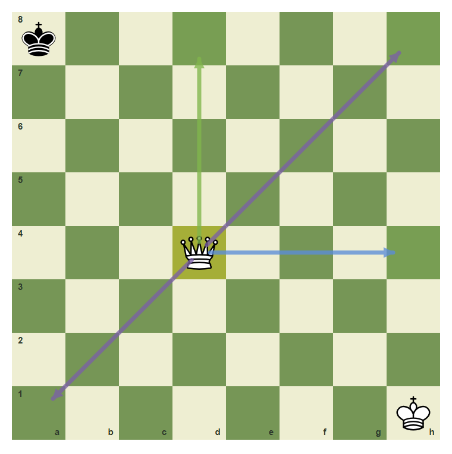
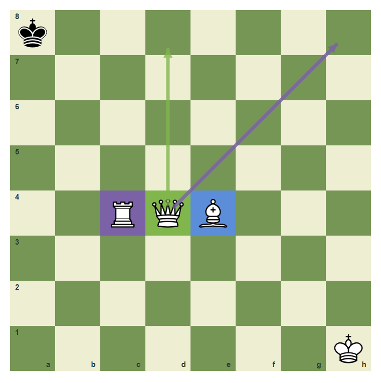
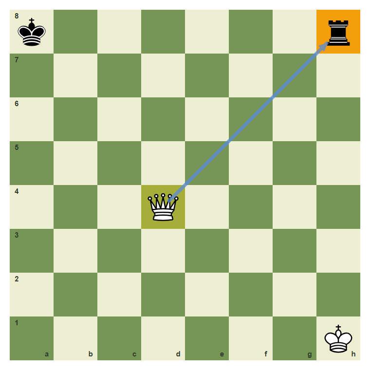
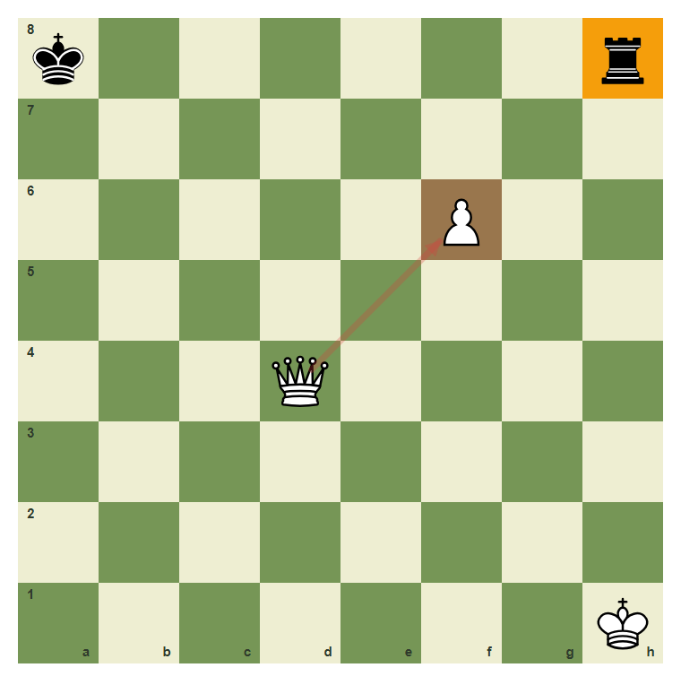
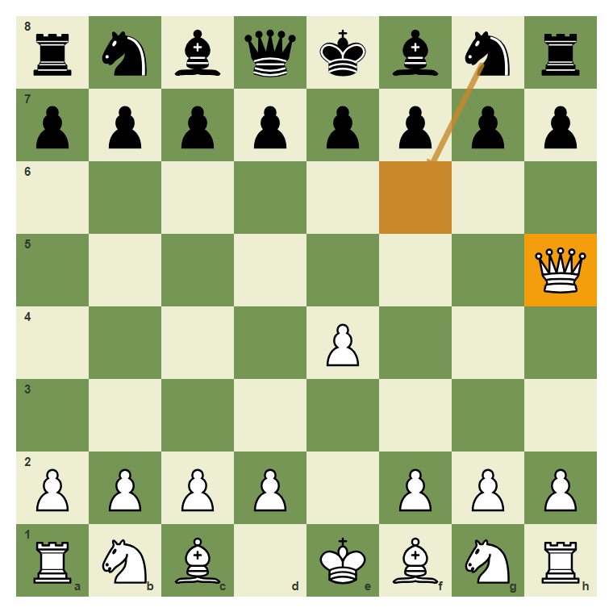
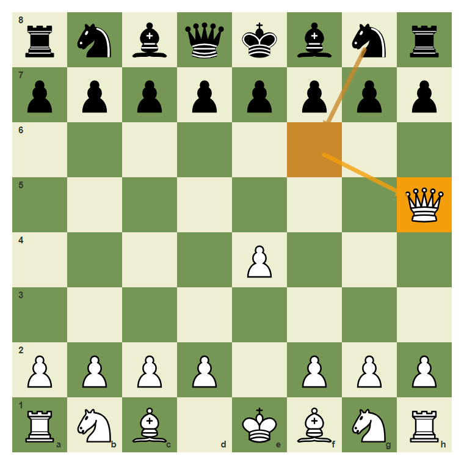

The Queen And Long-Range Power
The queen combines rook lines and bishop diagonals.
- Move the queen along ranks, files, and diagonals.
- Recognize that the queen cannot jump.
- Use the queen to target weak squares.
- Avoid bringing the queen into easy attack too early.
The Queen Combines Two Pieces
The queen is the strongest attacking piece because she moves like a rook and a bishop together. She can use files, ranks, and diagonals, but she still cannot jump.
Queen lines from d4

The queen can move vertically, horizontally, and diagonally from d4.
Queen as rook plus bishop

The queen on d4 shares the straight-line idea of the rook and the diagonal idea of the bishop.
Targets And Blocks
A queen becomes powerful when she attacks a clear target. But if a piece sits on the path, the queen must stop before it or capture it if it is an enemy piece.
The queen targets h8

The queen on d4 attacks the rook on h8 along the diagonal.
A blocked queen line

The white pawn on f6 blocks the diagonal, so the queen no longer attacks h8.
Early queen move

A queen on h5 can be useful, but Black can gain time by attacking her with Ng8 to f6.
Move the queen to h5
Move the queen from d1 to h5 along the diagonal.
Common Mistake
Common mistake: ignoring attacks on the queen
Beginners often bring the queen out and forget that the opponent can attack it. Here Black can play Ng8 to f6 and make the queen move again.

The knight move attacks the queen. A queen move that loses time needs a clear reason.
Chapter Checkpoint
How does the queen move?
The queen moves like:
Can a queen jump?
A queen can jump over pieces:
Why can early queen moves be risky?
Early queen moves can be risky because: